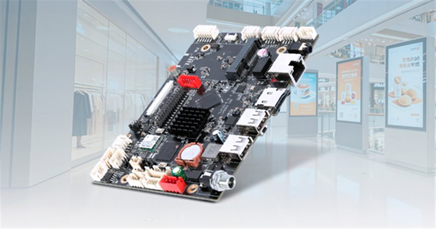

WALL-MOUNT TERMINAL
Wall-Mount Touch Panel
White-bezel touch panel shown in two builds — one running an Android desktop, one running a Windows desktop — with a slim white rear housing and X-braced wall bracket.
A white-bezel all-in-one touch panel for wall mounting in corridors, lift lobbies and reception areas. The two reference renders show the same housing with different system images: one boots into an Android desktop, the other into a Windows desktop, which is why the platform route is decided after the application is defined rather than from the picture. The rear view shows the slim white housing, the X-braced wall bracket and the cable junction; a row of function keys sits under the display.
Interfaces on this unit
Interfaces listed below are the ones visible on the reference photos. Port counts and levels for your build are confirmed in the specification review.
- White-bezel touch display
- Function key and indicator strip below the screen
- Rear cable junction box
- X-braced wall bracket
- Wi-Fi antenna connector at the rear
- RJ45 and USB routed through the junction
Configuration options
Points to agree before a quotation. Final availability, interfaces and ratings depend on the selected platform.
- Screen size and touch technology
- Android or Windows platform image
- Brightness and surface treatment
- White or custom enclosure colour and front branding
- Wall bracket position and cable exit planning
- Reserved space for a camera or NFC module
Typical applications
01
Corridor and lift-lobby information points
02
Reception check-in and visitor registration
03
Room booking panels outside meeting rooms
04
Wall-mounted self-service in clinics
Before you request a quotation
Which platform build does your software need: Android or Windows?
Share the answer together with the installation environment, quantity and target schedule so the configuration can be assessed.
What wall construction and mounting height are available?
Share the answer together with the installation environment, quantity and target schedule so the configuration can be assessed.
Where do power and network enter the wall?
Share the answer together with the installation environment, quantity and target schedule so the configuration can be assessed.
Is the panel operated by staff or by visitors?
Share the answer together with the installation environment, quantity and target schedule so the configuration can be assessed.
Discuss your project
Tell us the application, environment and I/O requirements. We reply with the questions that still need answers and the next step.
Discuss Wall-Mount Touch Panel
Kiosks using this platform
Terminals from our build range that typically run on a computing unit of this class.